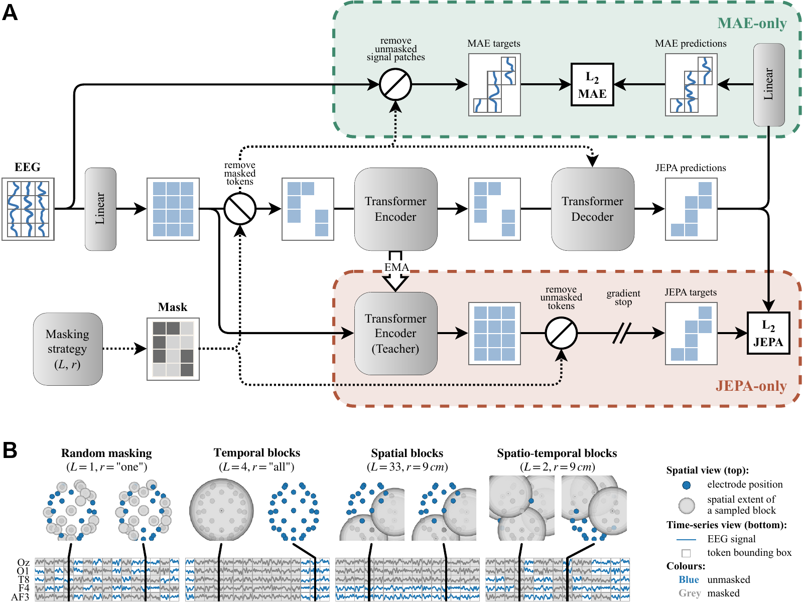

braindecode.models.Guetschel2026#
- class braindecode.models.Guetschel2026(n_outputs=None, n_chans=None, chs_info=None, n_times=None, input_window_seconds=None, sfreq=None, embed_dim=512, depth=4, num_heads=8, dim_feedforward=1365, patch_size=200, patch_overlap=20, pos_half_range=0.15, activation=<class 'torch.nn.modules.activation.GELU'>, drop_prob=0.0, normalization='median_std_clip', input_scale=1000000.0, clip_sigma=15.0, random_projection=None, random_projection_seed=0, channel_strategy='native', channel_strategy_kwargs=None)[source]#
Encoder of the EEG masking-geometry study from Guetschel et al. (2026) [guetschel2026].
Official website of the study: https://pierregtch.github.io/eeg-fm-masking/
Foundation Model Attention/Transformer Channel
Added in version 2.0.

Figure 1 of [guetschel2026]. (A) MAE and JEPA share one pre-training pipeline; this class is its tokeniser and encoder. (B) The masks are blocks of spatial radius \(r\) and temporal length \(L\).#
Which mask should an EEG foundation model learn from? The study answers with a controlled sweep: one backbone, pre-trained 58 times on the same data with the same recipe, changing only the pretext (MAE or JEPA) and the geometry of the mask. This class is that backbone: all 58 checkpoints load into it.
Both pretexts agree on the best mask, blocks of radius 9 cm and length 2 patches. With it, the frozen features reach the level of REVE-Base under a linear probe on the 12 datasets of OpenEEGBench, with 12.7 M parameters and a fraction of REVE’s pre-training compute.
Architecture
The backbone follows REVE-Small, with a simpler positional encoding:
feature_encoderPatch embedding. Each channel is cut into overlapping 1 s patches (200 samples, 20 of overlap), and one linear layer embeds each patch into 512 features.model.pos_encoderPositional encoding. Fixed sinusoids of the electrode position \((x, y, z)\) and of the patch index are added to the embeddings. Any montage works, as long as the channels have positions.model.transformerTransformer encoder. Four pre-norm layers (RMSNorm, 8 heads, GEGLU feed-forward) attend over all the channel × patch tokens.final_layerHead. Flatten, then a linear layer, with an optional fixed random projection in between (see below). It is not part of the checkpoints.
The 58 checkpoints
Each checkpoint is a Hugging Face repository, named after its three parameters (
hub_repo_id()builds the name):PierreGtch/eeg-fm-masking_{pretext}_r{radius}_L{length}
Pretext
maeorjepaRadius \(r\)
one(a single channel),6cm,9cm,12cm,all(every channel)Length \(L\)
1, 2, 4, 8, 16 or 33 patches (33 is the whole 30 s window)
Every combination exists except \(r\) = all with \(L\) = 33, which would mask the whole window: 2 × 29 = 58 checkpoints.
Recommended:
mae_r9cm_L2orjepa_r9cm_L2. Many other masks are nearly as good.To avoid for downstream use: masks that are too local (\(r\) = one), too global (\(r\) = all) or, in most cases, too long (\(L\) = 8, 16). JEPA collapses at \(r\) = all. These checkpoints are released to study how the mask shapes the representations.
Intermediate epochs:
model.safetensorsis the end of epoch 10, the one evaluated in the paper; the foldersepoch_01/toepoch_09/hold the earlier epochs of the same run.
License (MIT, the code). The weights are released under CC-BY-4.0 (collection, project page).
Usage
from braindecode.models import Guetschel2026 raw.set_montage("colin27_1020") # channel positions, in metres model = Guetschel2026.from_pretrained( Guetschel2026.hub_repo_id("mae", "9cm", 2), chs_info=raw.info["chs"], n_times=1000, # 5 s at 200 Hz n_outputs=4, # filename="epoch_05/model.safetensors", # an intermediate epoch ) # features: (batch, n_chans, n_patches, 512) features = model(x, return_features=True)["features"] # linear probing: train only the head, which starts from random weights for name, p in model.named_parameters(): p.requires_grad = name.startswith("final_layer.")
Random projection head
The paper probes the frozen features as OpenEEGBench does: it projects the flattened features to 5000 dimensions with a Gaussian random projection, then fits a linear model on top. Pass
random_projection=5000to put the same projection between the flatten and the linear layer of the head:The projection is drawn once, from
random_projection_seed, with the same distribution as scikit-learn’sGaussianRandomProjection. It is stored as a buffer: saved with the model, never trained.It is large:
random_projection×n_chans×n_patches× 512 values, about 0.9 GB in float32 for 5000 components, 22 channels and 4 s windows.
Warning
Input requirements
Sampling rate: 200 Hz, as in pre-training.
Units: volts, without standardisation. The model scales each window itself, as in pre-training (microvolts, then division by the median channel standard deviation, clipped at 15).
Channel positions: in metres, in the MNE head frame, as given by
raw.set_montage(...). Every channel must be 5 to 20 cm from the origin, which catches positions in centimetres or millimetres. For channels with standard names but no positions, passchannel_strategy="exact".Window: at least 200 samples; trailing samples that do not fill a patch are dropped.
Note
Differences from the reference implementation. The backbone gives bit-identical features. Around it:
the head takes the actual number of overlapping patches,
(n_times - 200) // 180 + 1. The original wrapper sizes its head forn_times // 200patches, which ignores the overlap, so that head only fits short windows (not 2000 or 6000 samples, for instance); OpenEEGBench replaces it, so the paper’s results do not depend on it;the random projection head is new;
channel positions are validated;
attention dropout is off in eval mode.
- Parameters:
n_outputs (int) – Number of outputs of the model. This is the number of classes in the case of classification.
n_chans (int) – Number of EEG channels.
chs_info (list of dict) – Information about each individual EEG channel. This should be filled with
info["chs"]. Refer tomne.Infofor more details.n_times (int) – Number of time samples of the input window.
input_window_seconds (float) – Length of the input window in seconds.
sfreq (float) – Sampling frequency of the EEG recordings.
embed_dim (
int) – Width of the tokens. Must be divisible by 8 and bynum_heads.depth (
int) – Number of transformer layers.num_heads (
int) – Number of attention heads.dim_feedforward (
int) – Width of each half of the GEGLU feed-forward block.patch_size (
int) – Number of samples of a patch (1 s at 200 Hz).patch_overlap (
int) – Number of samples shared by two consecutive patches.pos_half_range (
float) – Half range, in metres, of the electrode coordinates mapped to \([0, 1]\) before the sinusoidal encoding.activation (
type[Module]) – Activation of the gate of the feed-forward block.drop_prob (
float) – Dropout probability of the attention and feed-forward branches.normalization (
str) – Input scaling."median_std_clip"divides each window by the median over channels of the channel standard deviations and clips it atclip_sigma;"none"only multiplies byinput_scale. Use"none"withinput_scale=1.0for data you already scaled.input_scale (
float) – Factor applied to the input first (volts to microvolts).clip_sigma (
float) – Clipping bound of"median_std_clip".random_projection (
int|None) – Size of the fixed random projection inserted in the head (5000 in the paper), orNonefor no projection. Memory grows linearly with it (see “Random projection head” above).random_projection_seed (
int) – Seed of the random projection.channel_strategy (
str) – How any montage reaches the backbone (pretrained models only; see Channel strategies)."native"keeps the model as it is."exact","zero","nearest","idw","spline","field","source","region","wiener"(callmodel.channel_layer.fitfirst) or"latent"map the montage ofchs_info(or of thechs_infogiven toforward) onto the backbone’s channels with aChannelLayer. Saved in the config.model(x)andmodel.forward(x)both apply the layer.channel_strategy_kwargs (
dict|None) – Options of the strategy (e.g.{"reg": 1e-2}for"spline").
- Raises:
ValueError – If the channel positions are missing, not in metres (every channel must be 5 to 20 cm from the origin) or not in the MNE head frame, if an architecture argument is invalid, or if the signal-related parameters are missing and cannot be inferred.
Notes
If some input signal-related parameters are not specified, there will be an attempt to infer them from the other parameters.
References
[guetschel2026] (1,2)Guetschel, P., Aristimunha, B., El Ouahidi, Y., Delorme, A., Moreau, T., & Tangermann, M. (2026). What masking geometry works best for EEG foundation models? arXiv:2609.33487. https://arxiv.org/abs/2609.33487 Code: https://github.com/PierreGtch/eeg-fm-masking. Project page: https://pierregtch.github.io/eeg-fm-masking/.
Hugging Face Hub integration
When the optional
huggingface_hubpackage is installed, all models automatically gain the ability to be pushed to and loaded from the Hugging Face Hub. Install with:pip install braindecode[hub]
Pushing a model to the Hub:
from braindecode.models import Guetschel2026 # Train your model model = Guetschel2026(n_chans=22, n_outputs=4, n_times=1000) # ... training code ... # Push to the Hub; ``datasets`` and ``base_model`` go to the card model.push_to_hub( repo_id="username/my-guetschel2026-model", commit_message="Initial model upload", model_card_kwargs={"datasets": ["BNCI2014_001"]}, )
Loading a model from the Hub:
from braindecode.models import Guetschel2026 # Load pretrained model model = Guetschel2026.from_pretrained("username/my-guetschel2026-model") # Data the weights were trained on, from the Hub model card print(model.card_data.datasets if model.card_data else None) # Load with a different number of outputs (head is rebuilt automatically) model = Guetschel2026.from_pretrained("username/my-guetschel2026-model", n_outputs=4)
Extracting features and replacing the head:
import torch x = torch.randn(1, model.n_chans, model.n_times) # Extract encoder features (consistent dict across all models) out = model(x, return_features=True) features = out["features"] # Replace the classification head model.reset_head(n_outputs=10)
Saving and restoring full configuration:
import json config = model.get_config() # all __init__ params with open("config.json", "w") as f: json.dump(config, f) model2 = Guetschel2026.from_config(config) # reconstruct (no weights)
All model parameters (both EEG-specific and model-specific such as dropout rates, activation functions, number of filters) are automatically saved to the Hub and restored when loading.
See Loading and Adapting Pretrained Foundation Models for a complete tutorial.
Methods
- forward(x, return_features=False)[source]#
Forward pass.
- Parameters:
- Returns:
The logits, of shape
(batch, n_outputs), or, withreturn_features=True,{"features": z, "cls_token": None}withzof shape(batch, n_chans, n_patches, embed_dim).- Return type:
- classmethod hub_repo_id(pretext, mask_radius, mask_length)[source]#
Hub repository of one of the 58 released checkpoints.
- Parameters:
- Returns:
"PierreGtch/eeg-fm-masking_{pretext}_r{mask_radius}_L{mask_length}".- Return type:
- Raises:
ValueError – If a value is not in the lists above, or for
("all", 33).
Examples
>>> Guetschel2026.hub_repo_id("mae", "9cm", 2) 'PierreGtch/eeg-fm-masking_mae_r9cm_L2'
- load_state_dict(state_dict, *args, **kwargs)[source]#
Load a state dict whose backbone matches this model exactly.
Arguments are passed on to
torch.nn.Module.load_state_dict(). Keys underfinal_layer.*(andchannel_layer.*) may be absent or extra, because the pretrained checkpoints carry no head. Any other missing or unexpected key raises an error.- Raises:
RuntimeError – If a backbone key is missing or unexpected, even with
strict=False(from_pretrained()loads withstrict=False).- Parameters:
state_dict – The description is missing.
*args – The description is missing.
**kwargs – The description is missing.